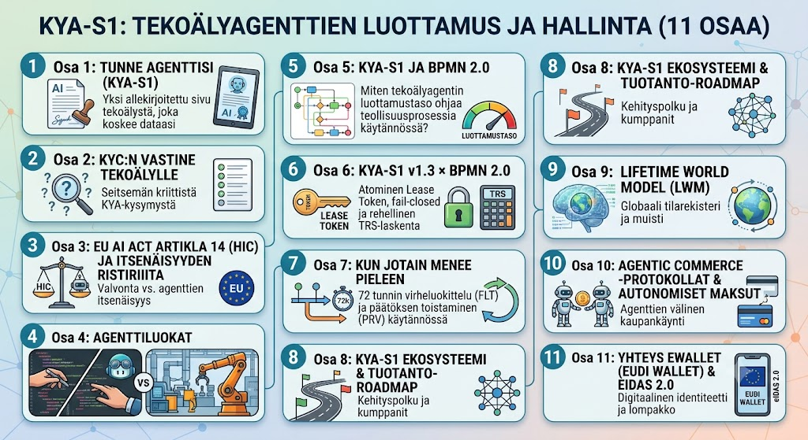

Yhteys eWallet EU (EUDI Wallet) & eIDAS 2.0
8. elokuuta 2026 · Risto Anton Päärni · Espoo

Johdanto: Sisäisestä SSO-kirjautumisesta EU-tason juridiseen identiteettiin
Sarjan edellisissä osissa määrittelimme, miten tekoälyagentteja hallitaan KYA-S1 v1.3 -turvallisuusstandardilla, atomisilla Lease Tokeneilla (TRS-4), BPMN 2.0 -prosessimoottorilla sekä autonomisilla Agentic Commerce -maksusopimuksilla.
Koko tämän arkkitehtuurin kriittisin liitoskohta palautuu kuitenkin aina samaan peruskysymykseen: kuka ihminen on oikeudellisesti vastuussa tekoälyagentin teoista?
Teollisuudessa ja julkishallinnossa ei riitä, että agentin taustahenkilö todennetaan yrityksen sisäisellä Active Directory- tai SSO-kirjautumisella. Kun tekoälyagentti tekee juridisesti sitovia sopimuksia, tilauksia, viranomaisilmoituksia tai teollisuuden turvallisuuspäätöksiä organisaatiorajojen yli, sen valtuuttavan ihmisen identiteetin on oltava EU-tasoisesti todennettu ja juridisesti sitova.
Tässä päätösosassa ankkuroimme KYA-S1 v1.3 -spesifikaation EU:n digitaaliseen identiteettikehykseen (eIDAS 2.0 / EUDI Wallet).
EUDI Wallet ja eIDAS 2.0: Virallinen identiteetti tekoälymaailmaan
EU:n digitaalisen identiteetin asetuksen (eIDAS 2.0) myötä jokaiselle EU-kansalaiselle ja -organisaatiolle tuodaan virallinen EUDI Wallet (European Digital Identity Wallet). Lompakko ei tarjoa ainoastaan vahvaa tunnistautumista, vaan se mahdollistaa pätövien sähköisten attribuuttitodistusten (QEAA, Qualified Electronic Attributed Credentials) esittämisen.
EUDI Walletin avulla ihmisjohtaja voi todentaa kiistattomasti:
- Virallisen henkilöllisyytensä ja kansalaisuutensa (eIDAS High -taso).
- Nimenkirjoitusoikeutensa tai edustusvastuunsa yrityksessä (kaupparekisteriasema).
- Viranomaismandaattinsa tai teollisen turvallisuussertifikaattinsa (esim. tietyn tehtaan pääkäyttöoikeus).
KYA-S1 v1.3 -standardi kytkee tämän ihmisen perusidentiteetin suoraan tekoälyagentin ajonaikaiseen suorituskykyyn.
KYA-S1 IDV-1/2 -kytkentä EUDI Walletiin
[ Ihmisjohtaja (EUDI Wallet) ] ──(1. eIDAS 2.0 QEAA Allekirjoitus)──> [ KYA-S1 IDV Engine ]
│
(2. Generoi IDV-2 Sidoksen)
│
[ DWS IQ Agenttisessio ] <──(3. Kryptografinen valtuutusmandaatti)───────────┘
│
├── (Suorittaa tehtävän Lease Tokenilla TRS-4)
│
└── (Tallentaa eIDAS-varmennetun PRV-4-päätösjäljen World Modeliin)1. Reaaliaikainen tunnistus (IDV-1) Sessiota käynnistettäessä tai valtuutuksia nostettaessa KYA-S1 IDV Engine edellyttää ihmisjohtajalta EUDI Wallet -vahvistusta. Tunnistautuminen tapahtuu alle 30 sekunnissa sisältäen biometrisen elollisuustarkistuksen.
2. Kryptografinen sidos agenttiin (IDV-2) EUDI Walletin tuottama allekirjoitus ja QEAA-attribuuttitodistus sidotaan kryptografisesti agenttisessioon (IDV-2). Tämä sidos säilyy muuttumattomana, vaikka tehtävä ketjuuntuisi useiden tausta-agenttien välillä (agent-to-agent handoff).
3. Välitön peruutuksen leviäminen (IDV-4) Jos ihmisjohtajan edustus- tai nimenkirjoitusoikeus peruutetaan viranomaisrekisterissä tai EUDI Walletissa, peruutus leviää KYA-AL-varmuustason puitteissa (KYA-AL3-tasolla alle 60 sekunnissa). KYA-S1 hätäjarru (TC4) mitätöi välittömästi kaikki kyseiseen ihmiseen sidotut aktiiviset Lease Tokenit (TRS-4).
EU AI Act Artikla 14 (HIC) viranomaistasolla
EU AI Actin artikla 14 edellyttää, että korkean riskin tekoälyjärjestelmissä säilyy vaikuttava ihmisen valvonta (Human-in-Command).
Ennen eIDAS 2.0 -integraatiota ihmisvalvonta oli usein vain sovellustason lokimerkintä (esim. “Käyttäjä Admin kuittasi varoituksen”). Tällainen loki on helppo kiistää oikeudessa.
Kytkemällä KYA-S1 ja EUDI Wallet toisiinsa artiklan 14 noudattamisesta tulee viranomaistasoisesti pitävää:
- Kiistämätön hyväksyntä (PRV-4): Kun ihminen kuittaa poikkeaman HIC Dashboardilta, hyväksyntä allekirjoitetaan eIDAS 2.0 -pätevällä sähköisellä allekirjoituksella (QES).
- Aukoton auditointijälki (PRV-2): Lifetime World Modeliin kirjaantuu ihmisen virallinen eIDAS-identiteetti, annettu sanallinen perustelu, tismalleen se näkymä, jonka ihminen näki kuitatessaan, sekä järjestelmän TRS-luottamustaso suoritushetkellä.
Oikeudellisessa tarkastelussa ei tarvitse arvailla, kuka nappia painoi: auditointiloki osoittaa täsmällisen luonnollisen henkilön virallisella EU-identiteetillä.
Yhteenveto: Sarjan päätössynteesi
Tähän päättyy 11-osainen katsauksemme KYA-S1-spesifikaatioon, EU AI Actiin, BPMN 2.0 -prosessinohjaukseen ja DWS IQ -agentteihin.
Koko arkkitehtuuri muodostaa aukottoman ketjun:
- EUDI Wallet & eIDAS 2.0: Ihmisen virallinen perusidentiteetti ja mandaatti.
- KYA-S1 v1.3 Specification: Agentin ajonaikainen identiteetti (IDV), käyttäytymisrajat (BHM/REG), atomiset Lease Tokenit (TRS-4), fail-closed-suojaus (TRS-5) ja 72h virheattribuutio (FLT-4).
- BPMN 2.0 & HIC Dashboard: Prosessin dynaaminen reititys luottamuspisteen mukaan automaatille tai ihmiselle.
- Lifetime World Model (LWM): Muuttumaton tilarekisteri ja päätösten toistettavuus (PRV-2/4).
- Agentic Commerce: Turvallinen, KYA-S1-suojattu autonominen maksuliikenne ja kaupankäynti.
Kun tämä kokonaisuus on paikoillaan, tekoälyagentit lakkaavat olemasta anonyymeja tietoturvariskejä. Niistä muuttuu Euroopan teollisuuden luotettava, suvereeni ja täysin ohjattavissa oleva suoritusporras.
Katso sarjan muut osat
- Osa 1: Tunne agenttisi (KYA-S1) — Yksi allekirjoitettu sivu tekoälystä tietoturvakansiossa, joka koskee dataasi
- Osa 2: KYC:n vastine tekoälylle — Seitsemän kriittistä KYA-kysymystä
- Osa 3: EU AI Act Artikla 14 (HIC) ja agenttien itsenäisyyden ristiriita
- Osa 4: Agenttiluokat: Kehittäjän GitHub Copilot vs. teollisuuden DWS IQ -tausta-agentit
- Osa 5: KYA-S1 ja BPMN 2.0: Miten tekoälyagentin luottamustaso ohjaa teollisuusprosessia käytännössä?
- Osa 6: KYA-S1 v1.3 × BPMN 2.0: Atominen Lease Token, fail-closed ja rehellinen TRS-laskenta
- Osa 7: Kun jotain menee pieleen: 72 tunnin virheluokittelu (FLT) ja päätöksen toistaminen (PRV) käytännössä
- Osa 8: KYA-S1 Ekosysteemi & Tuotanto-Roadmap
- Osa 9: Lifetime World Model (LWM) — Globaali tilarekisteri ja muisti
- Osa 10: Agentic Commerce -protokollat & Autonomiset Maksut
- Osa 11: Yhteys eWallet EU (EUDI Wallet) & eIDAS 2.0
- Osa 12: KYA-S1 Sanasto — Käsitteistö ja sanasto
Risto Anton Päärni
Perustaja & toimitusjohtaja, Lifetime Oy
Päätoimittaja, Lifetime Scope Journal